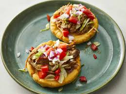

Sopes

Description
Sopes are a traditional Mexican dish consisting of thick,
round masa cakes topped with a layer of refried beans, meat,
lettuce, cheese, and salsa. They are often garnished with
crema and avocado, providing a delicious blend of flavors and textures.
Ingredients
- masa harina
- beans
- meat
- lettuce
- cheese
- salsa
- crema
- radishes
Steps
- 1. Prepare the masa dough: In a large bowl, mix the masa harina with
the salt and gradually add water until a dough forms. The dough should
be soft but not sticky.
- 2. Form the sopes: Divide the dough into small balls (about the size of a
golf ball). Flatten each ball into a thick disk (about 1/4 inch thick).
- 3. Cook the sopes: Heat a griddle or skillet over medium heat. Cook the
disks on each side for about 1-2 minutes, until lightly browned and cooked through.
- 4. Shape the sopes: While the sopes are still warm, pinch the edges to
create a raised border. This will help hold the toppings.
- 5. Fry the sopes: Heat vegetable oil in a skillet over medium-high heat.
Fry the sopes until they are golden and crispy, about 2-3 minutes per side. Drain on paper towels.
- 6. Assemble the sopes: Spread a layer of refried beans on each sope, then add your choice of meat, lettuce,
cheese, crema, salsa, and other toppings.